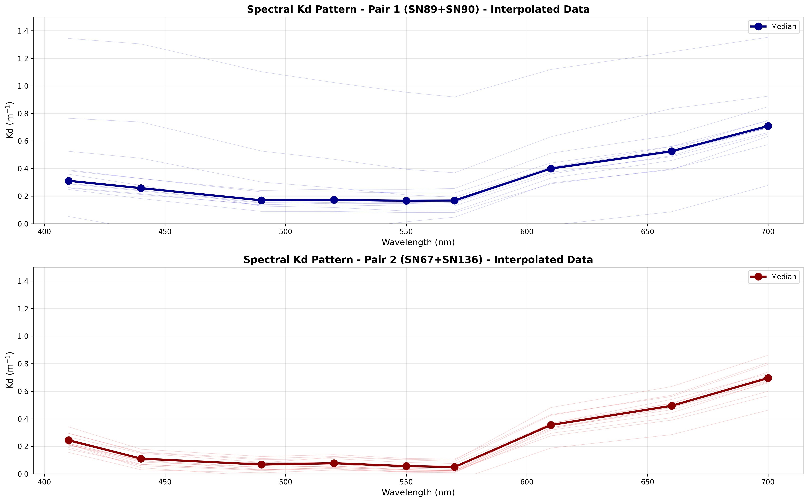
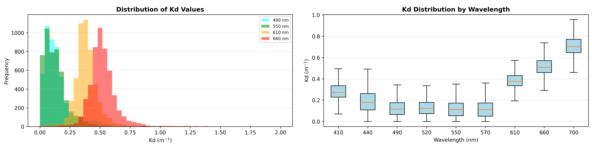

15 Bio-optical Conditions
15.1 Overview
The underwater light climate in Cockburn Sound and Owen Anchorage is one of the most important attributes that links human activities, water quality and seagrass health. CSIEM includes advanced light simulation capability, able to resolve the light climate and variability in the drivers of light attenuation.
Capturing the underwater light environment requires an understanding of the role of different Inherent Optical Properties (IOPs), which control the absorption and scattering of light. These IOPs include algal cells, detrital particles, chromophoric DOM (CDOM), and different types of inorganic sediment particles. Each of these properties varies considerably over space and time, both over seasonal time-scales and also significantly during events such as a local algal blooms, or river flood pulses (see Figure 15.1). Daily shipping and dredging operations within the shallow waters can also lead to complex patterns of water turbidity.

Figure 15.1. Snapshots taken from Sentinel-2 imagery showing periods where different optical properties can dominate water properties in and around Cockburn Sound. Visit the CSIEM Sentinel-2 explorer for details and further images.
Developing a well-calibrated light model is a useful way to help integrate the diversity of data from these sources and capture the variability in this key driver of ecosystem productivity. Additionally, key anthropogenic stressors associated with Cockburn Sound activities are related to dredging and in order to support environmental impact assessment, having a well parameterised light model is essential. Optically active constituents in the default CSIEM configuration include \(SS_1\), \(SS_2\), \(POM\), \(DOM\), and 4x \(PHY\) groups (see Chapter 13), plus additional \(SS\) groups can optionally be added to resolve dredge- or shipping-related material.
In this Chapter, two light model approaches are described which are configured within the AED model to compute the light climate variation in response to the optically active constituents. The first model is the “default” bulk-PAR model, and a second spectral model able to resolve the absorption and scattering of individual light wavelengths. Comparison of their predictions against selected observational data-sets is also presented.
15.2 Data availability and synthesis
A range of high quality light-related data-sets have been collected for assessing the light, including long-term monitoring of light attenuation, above and below water sensors measuring in situ \(PAR\), and several spectral (multi-wavelength) light sensor deployments. Refer to Figure 15.2 for a broad summary of past data collection efforts, and Table 15.1 for a summary of key data sets considered during model assessment.

Figure 15.2. Light data-set: Summary of CSIEM data catalogue showing identified light data. Click to enlarge. Visit the csiem-data catalogue for further information.
| Dataset | Description | Stations | Range | Notes |
|---|---|---|---|---|
| PAR (above water) | ||||
| WAMSI-WWMSP5-MET | Downwelling PAR installed at Woodman Point (NE Cockburn Sound) | 1 (KwinanaShelf) | Nov 2022 - July 2023 | … |
| DWER-CSMOORING-MS9 | Downwelling PAR installed on Mangles Bay mooring (SW Cockburn Sound) | 2 (Mangles Bay and Boat Club) | Feb 2022 - Dec 2024 | … |
| PAR (below water) | ||||
| WAMSI-WWMSP2-MS9 | Bulk PAR measured on Kwinana Shelf seabed | 1 (KwinanaShelf) | Nov 2022 - July 2023 | non-shaded data-set @ ~8m deep |
| WAMSI-WWMSP3-SEDDEP | Bulk PAR measured by turbidity loggers in CS and OA locations | 6 sites | Dec 2022 - Dec 2023 | 6 MGL loggers with hourly data |
| WAMSI-WWMSP5-WQ | Bulk PAR measured in OA and CS locations for ~ 5 intensive deployments | 3 (CS4, CS5, CS6) | Nov 2021 - Aug 2022 | 4 deployment windows using miniPAR loggers |
| DWER-CSMOORING-MS9 | Bulk PAR computed from MS9 spectral data | 8 (4 deep and 4 shallow) | Dec 2021 - Dec 2024 | 4 sites were profiling for ~ 12 months, reconfigured data now has 6 bottom sensors |
| Spectrally-resolved data | ||||
| WAMSI-WWMSP2-MS9 | Bulk PAR measured on Kwinana Shelf seabed | 1 (KwinanaShelf) | Nov 2022 - July 2023 | non-shaded data-set @ ~8m deep |
| DWER-CSMOORING-MS9 | Bulk PAR computed from MS9 spectral data | 8 (4 deep and 4 shallow) | Dec 2021 - Dec 2024 | 4 sites were profiling for ~ 12 months, reconfigured data now has 6 bottom sensors |
| Attenuation (Kd) | ||||
| DWER-CSMWQ | Regular profile data used to compute depth-integrated light attenuation | 33 (18 regularly sampled sites) | Dec 1984 - Jun 2023 | note attenuation in raw data converted by x2.3 to shift from log10 to ln |
| WAMSI-WWMSP3-CTD | Regular profile data used to compute depth-integrated light attenuation | 18 sites | Sep 2022 - Sep 2024 | … |
| DWER-CSMOORING-MS9D | Seven paired MS9 deployments used to compute high-frequency light attenuation | 1 (CS86, near Mangles Bay) | Aug 2023 - Jan 2025 | Wavelength specific and bulk-PAR \(K_d\) estimated for a range of environment conditions |
15.3 Bulk \(PAR\)
Photosynthetically Active Radiation (PAR; 400–700 nm) decreases with depth as light is absorbed and scattered by pure water, suspended inorganic sediments, phytoplankton pigments, and particulate and dissolved organic matter. In a bulk (band-averaged) model, this loss of light is represented with a diffuse attenuation coefficient for PAR, \(K_{d,\text{PAR}}\) (m\(^{-1}\)).
Using the well-established Beer-Lambert equation, the downwelling PAR irradiance at depth \(z\) (m), denoted \(I_{\text{PAR}}(z)\) (in W m\(^{-2}\) , or converted to mol photons m\(^{-2}\) s\(^{-1}\)), is computed as:
\[ I_{\text{PAR}}(z) = I_{\text{PAR}}(0^-)\, \exp\left[-\int_0^{z} K_{d,\text{PAR}}(z')\,\mathrm{d}z'\right] \]
where \(I_{\text{PAR}}(0^-)\) is PAR just below the water surface. Within AED, this calculation is resolved discretely over the vertical layer increments, such that the light at the bottom of each vertical layer is calculated from the bulk layer properties:
\[ I_{\text{PAR}}(z^+_i) = I_{\text{PAR}}(z^-_i)\,\exp\left(-K_{d_i}\,\Delta z_i\right). \]
where \(i\) denotes the vertical grid layer which has a thickness \(\Delta z\), and \(K_{d_i} = K_{d,\text{PAR}}\) for the \(i^{th}\) layer. To compute \(K_{d_i}\), the model aggregates the attenuation from contributions due to:
- background (pure) water,
- two classes of inorganic suspended sediment,
- particulate organic carbon (POC),
- dissolved organic carbon (DOC),
- phytoplankton / chlorophyll-a,
using a simple linear-additive formulation:
\[ K_{d_i} = K_{w} + k_{\text{e_ss1}}\,SS_1 + k_{\text{e_ss2}}\,SS_{\text{2}} + k_{\text{e_poc}}\,\text{POC} + k_{\text{e_doc}}\,\text{DOC} + \sum{k_e}_a\,PHY_a \]
where:
- \(K_{w}\) is the background attenuation of PAR by pure water (m\(^{-1}\)), and
- \(k_{\text{e}}\) are the constituent-specific PAR attenuation coefficients (e.g. m\(^{-1}\) per unit concentration), and
- the constituents refer to their concentrations in the \(i^{th}\) layer.
At the water’s surface the incoming light (\(I_0\)) is specified based on the downwelling solar radiation intensity from the meteorological boundary condition file (either BARRA or WRF), and the PAR fraction entering the water is assigned to be 45% of the incoming solar intensity. At the seabed (or top of a submerged seagrass canopy), the incident light is computed by following the above equation down the set of water layers that make up the water column. This formulation is run as default in the CSIEM hydrodynamic–biogeochemical simulations to resolve spatial and temporal variability in the underwater light climate and benthic PAR. It can optionally be extended to the spectrally-resolved bio-optical model described in Section 15.4.
Whilst the model is simple and applied widely, the challenge is locally parameterising the specific-attenuation coefficients, \(k_{\text{e}...}\), in order to accurately reflect local conditions. For Cockburn Sound, literature values for similar embayments and local estimates were reviewed, and refinement was undertaken by a) adjusting the specific attenuation factors to match \(K_d\) observations (specifically for \(SS\)), and b) validating light attenuation against benthic PAR sensors (see Section 15.2 for a description of the available data-sets). A summary table of coefficients in shown in Table 15.2.
| Parameter | Description | Unit | CSIEM | Notes |
|---|---|---|---|---|
| Specific Attenuation | ||||
| \[K_w\] | Pure water attenuation | \[\small{m^{-1}}\] | 0.05 | Background water attenuation typically 0.04–0.07 in clear coastal waters. |
| \[k_{e_{ss1}}\] | Attenuation by fine SS group (\(SS_1\)) | \[\small{m^{-1}\:(g\:m^{-3})^{-1}}\] | 0.085 | Fine suspended sediments: 0.05–0.15; higher attenuation rates for fine silts and clays with strong scattering properties. |
| \[k_{e_{ss2}}\] | Attenuation by coarse SS group (\(SS_2\)) | \[\small{m^{-1}\:(g\:m^{-3})^{-1}}\] | 0.045 | Coarser inorganic particles (fine sands and silt): \(0.02–0.06\); attenuation drops with increasing particle size as less scattering per unit mass (Bowers & Binding 2006). Default value of \(0.05\) commonly adopted. |
| \[k_{e_{poc}}\] | Attenuation by detritus (\(POC\)) | \[\small{m^{-1}\:(mmol\:C\:m^{-3})^{-1}}\] | 0.01 | POC optical effects vary by composition; equivalent to \(0.001–0.01 \: m^2 mg C^{-1}\). For mmol C units, this corresponds approximately to \(0.012–0.12\: m^2 mmol C^{-1}\) (using 1 mmol C ≈ 12 mg C). |
| \[k_{e_{doc}}\] | Attenuation by \(CDOM\) (as indicated by \(DOC\)) | \[\small{m^{-1}\:(mmol\:C\:m^{-3})^{-1}}\] | 0.005 | This term is usually elevated near riverine or groundwater inputs with high terrestrial DOM inputs. DOC influences light via CDOM absorption. Typical coastal CDOM attenuation 0.001–0.02 m\(^2\) mg C\(^{-1}\), equivalent to 0.012–0.240 m\(^2\) mmol C\(^{-1}\). |
| \[k_{e_{phy}}\] | Attenuation by \(\text{Chl-a}\) (as indicated by \(PHY_C\)) | \[\small{m^{-1}\:(mmol\:C\:m^{-3})^{-1}}\] | 0.0030 - 0.0051 (group specific) | This term influences extinction due to algal biomass. Phytoplankton chlorophyll-specific attenuation values reported between \(0.015–0.03\:m^2\:mg\:\text{Chl-a}^{-1}\) (Gallegos 2001; Gallegos and Moore 2000; Devlin et al. 2009), with ~0.02 commonly used. In carbon units (for AED), this equates to \(0.0036–0.0072 \: m^{-1}/ (mmol\:C/m^{-3})^{-1}\). O2M (2025) estimated phytoplankton attenuation locally with Cockburn Sound data from March 2025 and estimated \(K_{e_{chla}}\) to be $\(K_{e_{phy}} = 0.128\: m^2\: mg\:\text{Chl-a}\:^{-1}\) which converts to \(~0.03\: m^{-1} (mmol\:C/m^{-3})^{-1}\) |
15.3.1 \(K_d\) validation
Since the simulated \(K_d\) is influenced by the numerous optical constituents outlined in Table 15.2, the predictions are validated against local observations. The light attenuation coefficient has been measured across three main data collection programs (Table 15.1). For brevity, the model is first shown against four broad assessment regions, each containing several regular sampling locations, for the year 2023 (Figure 15.3). For comparison against CSMC data or specific sub-regions of Cockburn Sound over different years, refer to the MARVL viewer.
The variability in \(TSS\), \(Chl-a\) and organic carbon pools in the model is reflected in the predicted day-to-day variability in \(K_d\) and in the spatial variance within each region. The observed \(K_d\) estimates show a relatively narrow range of variation, whereas the model captures a seasonal signal with elevated attenuation during winter months.
Cockburn Sound

Figure 15.3-i. Comparison of observed and simulated light extinction coefficient (\(K_d,\: /m\)), within Cockburn Sound.
Owen Anchorage

Figure 15.3-ii. Comparison of observed and simulated light extinction coefficient (\(K_d,\: /m\)), within Owen Anchorage.
Gage Roads

Figure 15.3-iii. Comparison of observed and simulated light extinction coefficient (\(K_d,\: /m\)), within Gage Roads.
South Coast

Figure 15.3-iv. Comparison of observed and simulated light extinction coefficient (\(K_d,\: /m\)), within the South Coast region.
15.3.2 CS86 \(K_d\) logger analysis
In addition to the profiling-derived data shown above, the DWER mooring program includes a dedicated sensor array at the CS86 site for direct, high-frequency measurement of \(K_d\). Two MS9 optical loggers are positioned at 0.5 m and 1.5 m above the seafloor (1 m vertical separation), measuring downwelling irradiance across PAR and nine spectral wavelengths (410–700 nm). \(K_d\) values are derived using the Beer-Lambert relationship: \(K_d = -\ln(I_{deep}/I_{shallow})/\Delta z\). Raw logger data were interpolated to 20-minute resolution, and quality control included filtering for daytime conditions (surface PAR \(\geq\) 50 \(\mu\)mol/m\(^2\)/s) and realistic \(K_d\) values (0–0.5 m\(^{-1}\) for most deployments; 0–0.9 m\(^{-1}\) for high-turbidity periods). Five trustworthy deployments spanning 167 days between August 2023 and January 2025 yielded 1,809 hourly records. The results for each deployment are shown in Figure 15.4.
The overall mean \(K_d\) for PAR was 0.214 m\(^{-1}\), indicating relatively clear coastal waters and consistent with the profile-derived measurements. Notable temporal variability was observed across deployments. Deployments 2 and 3 (SN67+SN136 pair) exhibited the clearest conditions, with medians of 0.142 and 0.154 m\(^{-1}\), respectively. Deployments 4 and 5 showed moderate attenuation (0.231 and 0.224 m\(^{-1}\)). Diurnal patterns revealed late-afternoon peaks in light attenuation, likely driven by sediment resuspension during afternoon sea-breeze conditions. Deployment 7 (August–September 2024) captured a notable storm event around 5 September 2024, with \(K_d\) values reaching 0.5–0.9 m\(^{-1}\) — more than triple baseline conditions. This deployment’s median (0.337 m\(^{-1}\)) was 70% higher than during the clearest periods, demonstrating the role of storm-driven sediment resuspension in reducing water clarity. Spectral analysis revealed elevated attenuation across all wavelengths during this turbid period, with particularly strong increases at longer wavelengths (660–700 nm), characteristic of mineral particle scattering (see Section 15.5).
Early Spring (2023)

Figure 15.4-i. Summary of observed light extinction coefficient (\(K_d,\: /m\)) for PAR computed from the raw CS86 dual-light loggers, for a deployment in early Spring 2023.
Late Spring

Figure 15.4-ii. Summary of observed light extinction coefficient (\(K_d,\: /m\)) for PAR computed from the raw CS86 dual-light loggers, for a deployment in late Spring 2023.
Early Winter

Figure 15.4-iii. Summary of observed light extinction coefficient (\(K_d,\: /m\)) for PAR computed from the raw CS86 dual-light loggers, for a deployment in early Winter 2023.
Early Spring (2024)

Figure 15.4-iv. Summary of observed light extinction coefficient (\(K_d,\: /m\)) for PAR computed from the raw CS86 dual-light loggers, for a deployment in early Spring 2024.
Summer

Figure 15.4-v. Summary of observed light extinction coefficient (\(K_d,\: /m\)) for PAR computed from the raw CS86 dual-light loggers, for a deployment in late Summer 2024
15.3.3 Benthic \(PAR\) validation
The bulk-PAR light model within AED was assessed using the WWMSP2-MS9 data-set (Said et al., 2025). The sensor is located at a seabed depth of ~8 m on the western edge of Kwinana Shelf, and the record spans a range of conditions from summer 2022/2023 through to winter 2023. Figure 15.5 shows six 2–3 week periods selected for assessment. For this comparison the sensor was assumed to be positioned 20 cm above the seabed, and model output was extracted from the upper face of the bottom-most layer.
December

Figure 15.5-i. Comparison of observed and simulated light (\(PAR,\:W/m^2\)) on the Kwinana Shelf in December 2022.
January

Figure 15.5-ii. Comparison of observed and simulated light (\(PAR,\:W/m^2\)) on the Kwinana Shelf in January 2023.
February

Figure 15.5-iii. Comparison of observed and simulated light (\(PAR,\:W/m^2\)) on the Kwinana Shelf in February 2023.
March

Figure 15.5-iv. Comparison of observed and simulated light (\(PAR,\:W/m^2\)) on the Kwinana Shelf in March 2023.
May (early)

Figure 15.5-v. Comparison of observed and simulated light (\(PAR,\:W/m^2\)) on the Kwinana Shelf in May 2023.
May (late)

Figure 15.5-vi. Comparison of observed and simulated light (\(PAR,\:W/m^2\)) on the Kwinana Shelf in May 2023.
15.4 Spectrally-resolved bio-optical model
From CSIEM v1.5 onwards, a spectrally-resolved light model has been included within the AED model configuration. This section outlines the model approach and the assessment of its accuracy. The model includes both above-water and below-water components, and is integrated with the water quality and biological modules within AED. It is benchmarked against the well-established HydroLight / EcoLight software, and validated against below-water spectral data (see Section 15.2).
15.4.1 Model description
The light model in CSIEM is based on OASIM (Gregg and Casey, 2009). Light is propagated from \(250\:nm\) to \(4\:\mu m\) in \(33\) spectral bands, and reported out to a user-defined resolution, which for the default application uses an interpolated wavelength vector that spans \(280\:nm\) to \(1.1\:um\) in \(16\) steps. The above water illumination is provided in the same \(33\) OASIM bands via one of two available methods, one based on OASIM downwelling radiation calculations, and a second custom method developed specifically for Cockburn Sound. The air/sea interface is a wind-roughened surface with a proportion of diffusely reflecting sea foam when near-surface wind speeds exceed \(4\:m/s\). The above and below water model components are each described separately in the next sections.
15.4.1.1 Above-water
For sun and sky illumination OASIM includes a model for direct (sun) and diffuse (sky and cloud) down-welling solar radiation across the visible spectrum and out to 4 microns, (the long-wave spectral limit for solar-sourced photons of any practical significance to terrestrial energy flux). This model is driven by estimates of atmospheric column water vapour, stratospheric ozone, aerosol type and abundance, and cloud opacity (inferred from liquid water path), plus solar zenith angle and time of year.
Some atmospheric inputs to the OASIM illumination model are difficult to constrain with sufficient accuracy to achieve agreement with independent estimates of the short-wave surface flux (SWSF). To address this, a Cockburn Sound–specific illumination model was developed based on calibration of the RADTRAN-X model (Gregg and Carder, 1990) within EcoLight, constrained to match local SWSF data. In this implementation, direct and diffuse downwelling solar radiation are calculated under an aerosol regime consistent with local conditions, as characterised by quality-assured aerosol optical depth data from the AERONET station at Rottnest Island. Appendix B provides detail on the CSIEM illumination model, which takes the solar zenith angle, day of year and SWSF as inputs. The SWSF is converted to an estimate of cloud cover so that direct and diffuse irradiances can be interpolated from look-up tables indexed by solar zenith angle (coefficients based on a fourth-order polynomial in cosine of solar zenith angle) and cloud cover discretised to values of \(0\) and from \(0.3\) to \(1.0\) in \(0.1\) increments (values less than \(0.3\) are treated as unoccluded sun). These estimates of direct and diffuse surface irradiance are computed at \(5\: nm\) spectral resolution and then aggregated to the \(33\) spectral bands adopted in the OASIM model.
15.4.1.2 Below-water
Light propagation in the water column is an implementation of the OASIM underwater model. Light in \(33\) OASIM spectral bands, distinguished as separate streams of direct and diffuse light provided by the Atmosphere model, is diminished as it crosses the air/sea interface. In each spectral band the bulk optical properties of each discrete layer of the in-water model act upon the light streams via scattering and absorption. The bulk optical properties are the volumetric aggregates of absorption, total scattering and back-scattering, expressed in units of extinction per metre. The aggregate is for the combination of sea water and several optically active biota and sediment species, quantified in the CSIEM model by concentration and inherent optical properties (\(IOP\)’s). In each layer there is some redirection of the direct beam via scattering into the diffuse component, and there is some diminution of both direct and diffuse streams via absorption. The photosynthetically available radiation (\(PAR\)) at levels in the water column are available by integration across the OASIM bands that capture the spectral range \(400\) to \(700\:nm\).
15.4.2 Light climate exploration and benchmarking
In application of the light model within Cockburn Sound we first undertake a controlled assessment of CSIEM by comparing and benchmarking against expected profiles across a gradient of conditions. For this purpose, locations in Table 15.1 were selected.
Table 15.1. Location of sites for model benchmarking, including seafloor depth (metres below mean sea level).
| LOCATION | NOTES | LON | LAT | SEAFLOOR |
|---|---|---|---|---|
| Deep_Basin | middle of Cockburn Sound | 115.709 | -32.187 | 21.60 |
| East_Garden_Island | seagrass area | 115.685 | -32.196 | 10.88 |
| Freshwater_Bay | Swan estuary with high DOM and CHLA | 115.778 | -32.001 | 14.83 |
| Kwinana_Shelf | more turbid coastal water | 115.753 | -32.214 | 7.95 |
| Mangles_Bay | southern Cockburn Sound | 115.716 | -32.271 | 11.94 |
| Mullaloo_Beach | general northern coast | 115.677 | -31.743 | 8.12 |
| Owen_Anchorage | coastal water | 115.704 | -32.107 | 15.08 |
| Validation | site for light validation at Kwinana Shelf | 115.748 | -32.196 | 7.04 |
| West_Rottnest | open ocean water | 115.397 | -32.019 | 62.91 |
400nm

Figure 15.6-i. Absorption and scattering (\(/m\)) of optically active constituent species at \(400\:nm\) for each site over the sunlit portion of the two days of the CSIEM simulation.
550nm

Figure 15.6-ii. Absorption and scattering (/m) of optically active constituent species at \(550\:nm\) for each site over the sunlit portion of the two days of the CSIEM simulation.
700nm

Figure 15.6-iii. Absorption and scattering (/m) of optically active constituent species at \(700\:nm\) for each site over the sunlit portion of the two days of the CSIEM simulation.
15.4.3 Optical property characterisation
Figure 15.6 (above) characterises the nine benchmarking locations in terms of extinction by optically active species, separated into contributions from absorption and scattering. The results labelled ‘TOTAL’ represent the combined effect of all species. Values are aggregated over the two days of the CSIEM simulation, drawn from EcoLight computations for each profile at the half-hour time-step during sunlit hours, and shown at three representative wavelengths (400 nm, 550 nm and 700 nm).
For all sites except the open-ocean West Rottnest site, sediment is the dominant contributor to extinction across the three spectral channels. The relative proportion of total absorption to scattering is highest at 700 nm, where the dominant absorber is seawater itself, whereas at 400 nm CDOM dominates the absorption. The relative contribution of total scattering is greatest at 550 nm. At 400 nm, scattering dominates overall extinction, with sediment scattering the largest component at most sites — though at West Rottnest, sediment scattering is comparable to that from chlorophyll-a and POC. A close association is evident between both scattering and absorption by chlorophyll-a and POC at all three wavelengths. At Freshwater Bay, total scattering is approximately an order of magnitude larger than at all other sites.
Figure 15.7 shows the shortwave radiation from CSIEM model data (upper panel) and from weather observations (lower panel) for the daylight hours of the two simulation days. By selecting noon and 4 pm on each day, clear and cloudy conditions are sampled at solar zenith angles of approximately 10° and 50°.

Figure 15.7. Shortwave flux from CSIEM model and from weather data. From 11:30 to 16:30 on 6 January, some amount of cloudiness diminishes the shortwave radiation compared to the clear sky conditions of the previous day, and cloudiness is greatest at noon and 4pm. These are the times we will use in comparing CSIEM model results with EcoLight to provide clear and cloudy conditions at two solar zenith angles.
Figure 15.8 shows the surface illumination from NASA’s Coupled Ocean and Atmosphere Radiative Transfer (COART) and from the developed light model in CSIEM for the 4 times identified in Figure 15.7. Whilst there can be noticeable differences in the direct/diffuse mix of light at the ocean surface, this plot shows a general agreement with an alternate well-regarded model. This supports the veracity of the locally-specific light model and its implementation in CSIEM.

Figure 15.8. Surface illumination at the OASIM band centres from COART and CSIEM light models for the 4 comparison times in Figure 15.7. COART was run at 1nm resolution and aggregated to the OASIM bands.
15.4.4 PAR Comparisons
The plots on the following pages show comparisons between PAR computed using CSIEM and EcoLight for the 9 locations and 4 times. The solar zenith angle at noon is about 11 degrees and at 4pm about 49 degrees. The plots are grouped into sites with similar bathymetry.
The agreement between CSIEM and EcoLight is very good, and much improved relative to a generic single band light propagation model (which is included as an uninformed reference by which to compare).
Dashed lines on each plot indicate the depth at irradiance falls to \(10\:\%\) of the near-surface value. For all sites the \(10\:\%\) depth is greater for CSIEM than for EcoLight. This shows the diffuse attenuation coefficient of downwelling \(PAR\), \(K_{PAR}\), is slightly lower for CSIEM than for EcoLight.
1

Figure 15.9-i. \(PAR\) at depth comparisons for sites Kwinana_Shelf, Mullaloo_Beach and Validation.
2

Figure 15.9-ii. PAR at depth comparisons for sites East_Garden Island, Freshwater_Bay and Mangles_Bay.
3

Figure 15.9-iii. PAR at depth comparisons for sites Deep_Basin and Owen_Anchorage.
4

Figure 15.9-iv. PAR at depth comparisons for site West_Rottnest.
Additionally, an integration of PAR over a single day to obtain the daily energy flux was compared, sometimes termed the Daily Light Integral (DLI), available at several ocean depths. There is a slight bias to over-estimate this quantity from the CSIEM OASIM implementation as compared to EcoLight which is at its least for site West_Rottnest and at its most for site Freshwater_Bay. The fundamental difference between the two models is the modelling of the diffuse light field. For clearer water, or more correctly waters with a lower proportion of scattering, the diffuse nature of the light field in each model is very similar and attenuation is dominated by absorption. However, as the impact of scattering increases, the downwelling light field in EcoLight becomes more diffuse than in CSIEM. The slight difference in the modelled diffuse light field was shown to affect the \(10\:\%\) depth in Figure 15.9.

Figure 15.10. Daily energy flux in the \(PAR\) band (known as \(DLI\)), as derived from EcoLight and from the CSIEM results for all nine sites at several depths.
15.4.5 Spectral Irradiance Comparisons
The following analyses present plots of multi-spectral irradiance from CSIEM and EcoLight at depths of 1 and 5 metres for each location. Each page is for one of the four times identified in Figure 15.7 to cover clear and cloudy conditions at two solar zenith angles.
Excluding the turbid Freshwater Bay site, the agreement between CSIEM and EcoLight is excellent under clear-sky conditions at noon (Figure 15.11-i) and at 1 m depth. Across the remaining times and conditions, the spectra are in very good agreement.
At the Freshwater Bay site, the downwelling irradiance spectra from CSIEM and EcoLight show distinct differences in overall intensity, with EcoLight consistently predicting lower spectral irradiance than CSIEM. This is consistent with the differences noted in the PAR depth profiles and daily integrated energy flux (Figure 15.10).
1

Figure 15.11-i. January 5, 2023 at noon (clear sky), spectral irradiances from EcoLight and CSIEM interpolated to 1m and 5m depths for the nine comparison sites.
2

Figure 15.11-ii. January 6, 2023 at noon (cloudy conditions), spectral irradiances from EcoLight and CSIEM interpolated to 1m and 5m depths for the nine comparison sites.
3

Figure 15.11-iii. January 5, 2023 at 4pm (clear sky), spectral irradiances from EcoLight and CSIEM interpolated to 1m and 5m depths for the nine comparison sites.
4

Figure 15.11-iv. January 6, 2023 at 4pm (cloudy conditions), spectral irradiances from EcoLight and CSIEM interpolated to 1m and 5m depths for the nine comparison sites.
15.4.6 Assessment of light dynamics
The field spectra from Cockburn Sound are made by MS9 instrument with 10nm FWHM spectral filters centered on wavelengths 448, 470, 524, 554, 590, 628, 656, 699 nm. Across the PAR band, CSIEM channels are 25 nm wide and the Curtin light model provides illumination representative of these wider channels. In its output data product, CSIEM provides results interpolated to another set of discrete wavelengths. Across the PAR band these are 410, 440, 490, 510, 550, 590, 635, 660, 700 nm. Whilst these differences are not outcome determinant to the modelling objectives, they can lead to small apparent anomalies when comparing model data to field spectra.


Figure 15.12. Surface illumination on January 5, 2023 (left panel) and how these data yield synthetic CSIEM and MS9 outputs (right panel). The source data are from EcoLight at \(1\:nm\) resolution and the differences in the right panel are artefacts due only to the different processing paths.
15.4.7 Single profile assessment
To evaluate the accuracy of the spectral light model, HydroLight — a widely used radiative transfer reference model — was used to benchmark the predicted light attenuation profiles against in-situ spectral measurements. For this comparison, inherent optical properties (IOPs) were held within the range of values typically reported for coastal waters, using the standard IOP models available within HydroLight.
Coincident in-situ spectral light profiles and water quality constituent data were sourced from the DWER-CSMOORING-MS9 monitoring program. Four dates at site 6147034 (South CS11) were identified where concurrent spectral profiles, chlorophyll and TSS measurements were available. Table 15.2 lists the dates and corresponding constituent concentrations used for the comparison.
Table 15.2. Dates, chlorophyll and TSS concentrations for the four in-situ comparison data-sets at site 6147034 (South CS11).
| Site code | date | Chl mg/m3 | TSS mg/L |
|---|---|---|---|
| 6147034 | 2/2/2022 | 0.7 | 1.9 |
| 6147034 | 3/6/2021 | 0.7 | 1.1 |
| 6147034 | 7/5/2021 | 0.7 | 0.8 |
| 6147034 | 20/7/2021 | 1.3 | 1.1 |
HydroLight was run for each of the four sampling occasions using the measured chlorophyll and TSS values, and with CDOM absorption and environmental conditions systematically varied across the ranges listed in Table 15.3. This approach spans the plausible range of optical conditions for Cockburn Sound and illustrates the sensitivity of the predicted light field to key optical drivers.
Table 15.3. Various input values for HydroLight modelling
| CDOM a440 (m-1) | 0.02, 0.12, 0.30, 1.50, 3.00 |
| Sky conditions | clear, cloudy (100%) |
| Substrate albedo | sandy, black |
| Wavelengths (nm) | 412.5, 442.5, 492.5, 512.5, 552.5, 592.5, 637.5, 662.5, 702.5 |
Figure 15.13(a-d) show the in-situ and modelled spectral profiles as well as derived spectral diffuse attenuation coefficients, \(K_{\lambda}\). Each figure contains nine separate plots, one for each spectral profiling band \[410 nm, 440 nm, 490 nm, 510 nm, 550 nm, 590 nm, 635 nm, 660 nm, 700 nm\]. The vertical axis is depth in metres. The lower axis of each plot is the spectral irradiance in \(uW/cm^2^/nm\). The axes are only labelled on the lower row of plots. The top axis is the spectral diffuse attenuation coefficient in m-1, only labelled for the top row of plots.
In each panel, red stars and green dots represent the in-situ spectral profiling irradiance data. Exponential curves were fitted to the profile data below a specified depth limit (noted on each plot as “depth limit = 4.0 m”), as near-surface measurements can be affected by wave-induced variability and instrument shading — a consideration noted in the quality control records for the Cockburn Sound deployments. The thick dark-blue curve shows the fitted exponential function, with the derived spectral diffuse attenuation coefficient, \(K\), indicated in the upper left corner of each plot along with the coefficient of determination, \(R^2\).
The cyan curves show \(K\) values derived point-to-point from successive light measurements, providing a complementary view of the depth-dependent attenuation structure relative to the fitted profile values shown on the top axis.
The orange curve on each plot represents the HydroLight-modelled spectral irradiance profile using the measured chlorophyll and TSS concentrations from Table 15.2, with CDOM absorption set to \(a_{440}\) = 0.02 m\(^{-1}\), clear sky conditions and a sandy substrate. The thin blue curves illustrate the sensitivity of the modelled profiles across the full range of CDOM values, substrate types and sky conditions listed in Table 15.3.
2 Feb 2022

Figure 15.13-i. Wavelength specific light profiles for 2 February 2022, showing best fit curves for light attenuation.
3 Jun 2021

Figure 15.13-ii. Wavelength specific light profiles for 3 June 2021, showing best fit curves for light attenuation.
7 May 2021

Figure 15.13-iii. Wavelength specific light profiles for 7 May 2021, showing best fit curves for light attenuation.
20 Jul 2021

Figure 15.13-iv. Wavelength specific light profiles for 20 July 2021, showing best fit curves for light attenuation.
15.4.8 Spectral \(K_d\) from paired MS9 sensors
In addition to the single-profile spectral assessments above, spectral diffuse attenuation coefficients (\(K_{\lambda}\)) were derived from the paired MS9 logger array at the CS86 mooring site. The dual-sensor configuration, with loggers separated by 1 m vertically in the water column, enables continuous high-frequency estimation of \(K_d\) at each of the nine MS9 wavelengths (410–700 nm), using the Beer-Lambert relationship applied between the two measurement depths.
Figure 15.14 shows the spectral \(K_d\) pattern for the two sensor pairs (SN89+SN90 and SN67+SN136), with individual daily profiles shown as faint lines and the median highlighted. Both pairs exhibit the characteristic U-shaped spectral attenuation curve, with minimum \(K_d\) in the 490–550 nm range and elevated attenuation at shorter wavelengths (due to CDOM and detrital absorption) and longer wavelengths (due to pure water absorption and particle scattering). The SN67+SN136 pair recorded generally lower \(K_d\) values, consistent with its deployment during clearer water conditions.

Figure 15.14. Spectral \(K_d\) patterns derived from paired MS9 loggers at the CS86 mooring site for sensor pair 1 (SN89+SN90, upper) and pair 2 (SN67+SN136, lower). Faint lines show individual profiles; bold lines with markers show the median \(K_d\) at each wavelength.
The distribution of spectral \(K_d\) values across all trustworthy deployments is summarised in Figure 15.15. The histogram (left) highlights the separation between the shorter, less-attenuated wavelengths (490, 550 nm) and the longer, more-attenuated wavelengths (610, 660 nm). The box-and-whisker summary (right) confirms the U-shaped spectral dependence, with median \(K_d\) lowest at 520–570 nm (~0.1–0.15 m\(^{-1}\)) and highest at 700 nm (~0.7 m\(^{-1}\)). These observed spectral attenuation patterns provide a key benchmark for assessing the spectral light model described in the following sections.

Figure 15.15. Distribution of spectral \(K_d\) values from the CS86 paired MS9 loggers. Left: frequency histograms for selected wavelengths (490, 550, 610, 660 nm). Right: box-and-whisker plots of \(K_d\) across all nine MS9 wavelengths (410–700 nm).
15.5 Spectral validation
Figure 15.16 shows a comparison of CSIEM-modelled spectral irradiance against in-situ measurements from the Kwinana Shelf sensor. The field data exhibited anomalous spectral features — notably a peak irradiance at 470 nm inconsistent with expected optical properties — and accordingly, further detailed analysis at this site was deferred pending additional data quality assessment.

Figure 15.16. CSIEM modelled spectral irradiance at depth compared to MS9 field spectra.
15.5.1 Seasonal spectral validation
Both the measured and modelled light climates exhibited a similar seasonal trend, with peak light intensity in December 2022 decreasing gradually to July 2023, and higher light intensities in the 448–590 nm wavelength range (Figure 15.17). A regression of measured versus modelled light across all spectral bands (Figure 15.18) indicated that the model captures the range and seasonal trend well, though with a tendency to overpredict at short wavelengths (398 nm) and underpredict at long wavelengths (699 nm). This is likely attributable to a slight overprediction of suspended solids (SS) concentrations, which disproportionately attenuate shorter wavelengths. POC and DOC also contribute to attenuation in the shorter wavelength range; however, field observations of POC and DOC concentrations in Cockburn Sound are limited, constraining the extent to which these contributions can be independently validated.

Figure 15.17. Seasonal variation in spectral irradiance compared to MS9 field spectra at the Kwinana Shelf site.
To further examine the effects of inherent optical properties (IOPs) on light attenuation through the water column, the modelled SS, total chlorophyll-a (TCHLA), POC and DOC concentrations and their respective contributions to spectral absorbance are shown in Figure 15.19. SS concentration is the dominant factor controlling light attenuation at shorter wavelengths. However, the absorbance contributions from SS, POC and DOC decrease rapidly with increasing wavelength, whereas TCHLA maintains relatively higher absorbance at longer wavelengths.

Figure 15.18. Wavelength specific light profiles, showing best fit curves for light attenuation.

Figure 15.19. Wavelength specific light profiles, showing best fit curves for light attenuation.
15.6 Summary
The CSIEM model is well suited to resolving the variability in the underwater light climate. Underwater irradiance is closely related to the inherent optical properties of water, including suspended solids, detrital material, and total chlorophyll-a, and the performance of CSIEM in capturing these constituents is reported in Chapter 14.
The bulk-PAR simulation approach accounts for the various drivers of light attenuation, and predictions are consistent with routinely collected \(K_d\) estimates from light profile data, including from more wave-exposed areas (e.g., Gage Roads) and more sheltered regions (e.g., Cockburn Sound). Some uncertainty remains in the relative contributions of detrital material, inorganic sediments and chlorophyll-a to the overall attenuation, and further sensitivity testing and calibration is recommended in future model versions. Nonetheless, the predicted underwater light intensity at the Kwinana Shelf site was accurate, and the current calibration is well suited to investigations of the relationship between water quality and seagrass habitat.
The spectral light model accurately captures underwater light intensities with the additional advantage of resolving the full light spectrum, particularly for wavelengths between 448–656 nm — the range most important for primary producers such as seagrass. Some misalignments were noted at wavelengths below 448 nm and above 656 nm; further refinement of IOP parameterisations in future versions is expected to improve these. These peripheral wavelengths contribute a relatively small proportion of the energy available for seagrass photosynthesis.
- CSIEM includes two light model options: a bulk-PAR attenuation model and a spectrally-resolved bio-optical model, both parameterised using field data from Cockburn Sound and surrounding waters
- The bulk-PAR model captures spatial variability in light attenuation (\(K_d\)) across wave-exposed (Gage Roads) and sheltered (Cockburn Sound) regions, and is well suited to assessments of water clarity impacts on seagrass habitat
- The spectral model resolves wavelength-specific absorption and scattering by suspended sediments, phytoplankton, POC, DOC and pure water, accurately reproducing irradiance in the 448–656 nm range most relevant to seagrass photosynthesis
- Suspended sediment concentration is the dominant control on light attenuation at shorter wavelengths, while phytoplankton pigments become relatively more important at longer wavelengths